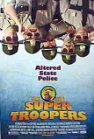
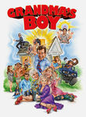

Top 10 New Cult Movies (Reader's Picks)
http://daily.likeme.net/2010/05/21/the-top-10-new-cult-movies-readers-picks/
Top Reader Picks for Cult Movies from http://daily.likeme.net/2010/05/21/the-top-10-new-cult-movies-readers-picks/. Shaun of the Dead and Hot Fuzz were mentioned as one.
List contains: 11 items, 18.5 hours.
Top Reader Picks for Cult Movies from http://daily.likeme.net/2010/05/21/the-top-10-new-cult-movies-readers-picks/. Shaun of the Dead and Hot Fuzz were mentioned as one.
List contains: 11 items, 18.5 hours.
Stephen Klancher
...has seen 7
...has seen 11.9 hours
...has not seen 6.6 hours

Timeline - Covers
Most Recent:
Idiocracy
First Unseen:
The Room (# 2)
...has seen 7
...has seen 11.9 hours
...has not seen 6.6 hours
Timeline - Covers
Most Recent:
Idiocracy
First Unseen:
The Room (# 2)
1.

The Big Lebowski (1998) Releases on 1998-02-15
Stephen Klancher: SEEN 
Brett introduced me to Lebowski and I have since watched it many times. Love it.


4.

Hot Fuzz (2007)
5.

Super Troopers (2001)
Stephen Klancher: SEEN
I watched this first year of college while playing Counter Strike, so I don't remember it quite as well as if I were paying attention. Though it was full of fun shenanigans...
6.

Idiocracy (2006) Releases on 2007-01-25


9.
Repo! The Genetic Opera (2008)
Stephen Klancher: September 27, 2010
That was quite fun. Watching this I felt like it was a rough cut of something that could be great. Like if they just edited more and reworked some of the songs it wouldn't have failed so hard at the box office.
11.

Grandma's Boy (2006) Releases on 2006-01-06
Stephen Klancher: January 6, 2006
I loved this movie. One of very few movies I went to see a second time in the theater.